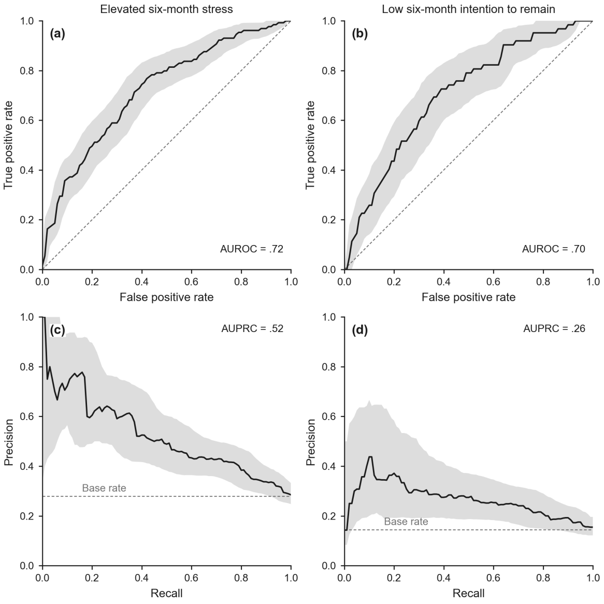

Helping professions · Research companion
Eleven intake questions predicted, six months ahead, which Head Start staff would report elevated stress or low intention to remain.
A randomized controlled longitudinal trial of 4,054 Head Start employees (95% women, mean age 43), split into training, development, and test partitions (n = 2,429, 811, and 814). An 11-predictor logistic regression on baseline stress, burnout, anxiety, depressive symptoms, job satisfaction, hope, reappraisal beliefs, and demographics beat the base rate for both elevated stress and low intention to remain.
At a glance
.72AUC, elevated stress95% CI [.67, .77] on the test partition
.70AUC, low intention to remain95% CI [.63, .77]
0.92Calibration slopeElevated stress; 95% CI [0.70, 1.19]
4,054Employees in a randomized trialTraining, development, and test partitions of 2,429, 811, and 814
How well does it rank people
